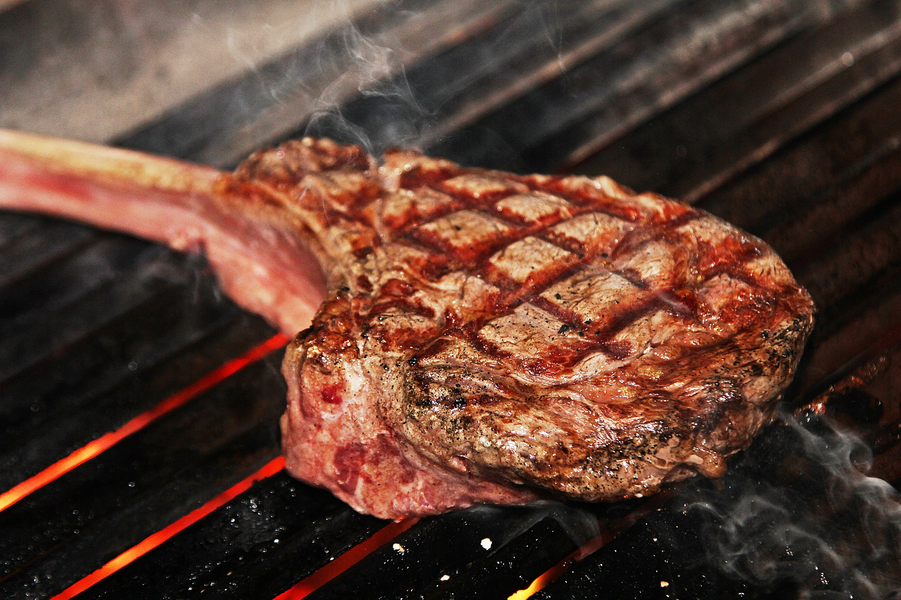

Tomahawk steak

Description
This grilled tomahawk steak recipe is a showstopper, ideal for sharing with friends and family.
Ingredients
- 1 tablespoon brown sugar
- 1 tablespoon Montreal steak seasoning
- 2 teaspoons garlic powder
- 2 teaspoons onion powder
- 1 (2 3/4 pound) tomahawk steak (3-inch thick bone-in ribeye)
Steps
- place brown sugar, Montreal steak seasoning, garlic powder, and onion powder in a small airtight container; shake or stir to combine. Set aside 2 teaspoons steak rub to use in compound butter.
- Place steak on a half sheet pan, and rub steak on top, bottom, and sides with remaining steak rub until well coated.
- Preheat the oven to 300 degrees F (150 degrees C).
- Bake steak on the sheet pan in the preheated oven until an instant-read thermometer inserted into the center reads 110 degrees F (43 degrees C), about 45 minutes.
- Grill steak directly on the grates of the preheated grill; sear on both sides, about 2 minutes per side.
- Remove steak from the grill, and smear compound butter over top.